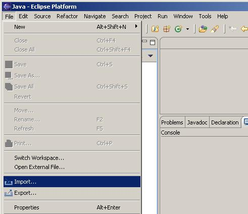
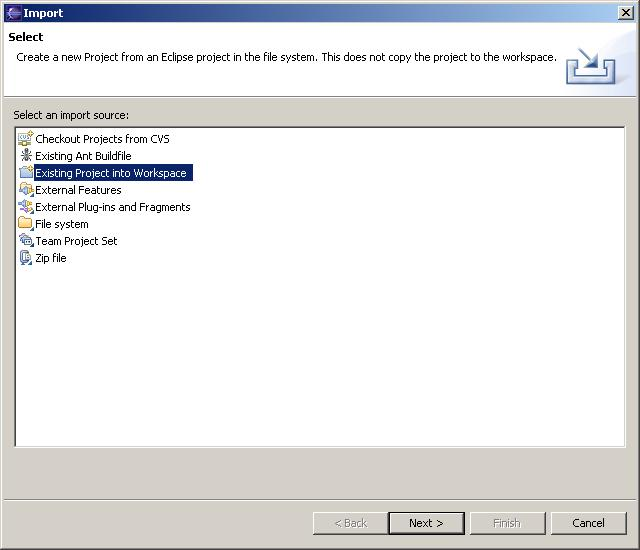
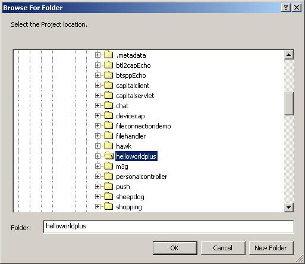
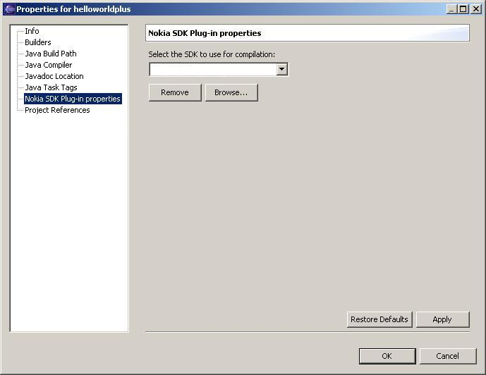
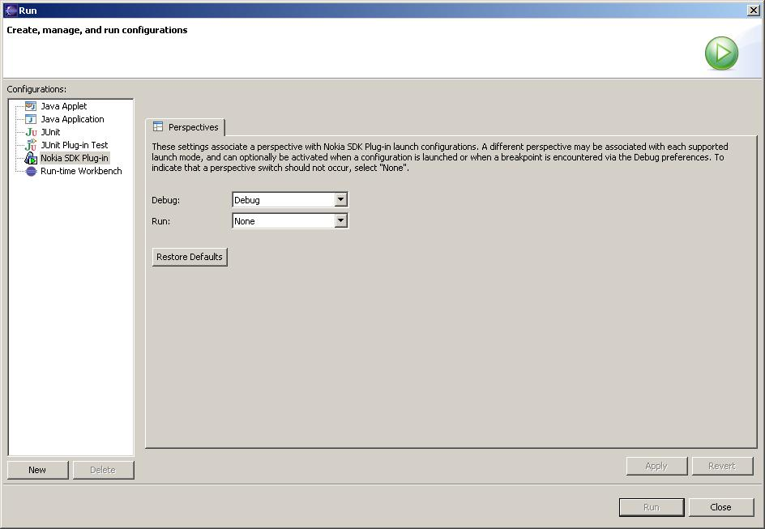
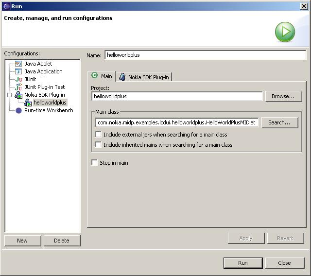

Example Applications |
Building and running the midlet
The following instructions introduce you to using Eclipse with the MIDlet examples..
Follow the installation instructions for Eclipse provided in the Eclipse documentation.
Before you can specify the SDK to be used in a project, you have to configure it to be used with Eclipse. This involves adding it to the set of available JDKs. For more detailed instructions, see the Installation and Configuration Guide
Open Eclipse in the Java™ perspective.
Select File->Import as shown below.

Select "Existing Project into Workspace" as shown below.

Click the Next button and then browse to the helloworldplus
midlet as shown below

Select OK. When the next windo appears select
Finish. The project is now imported.
Use the Eclispe Project properties menu to configure the
JDK (The SDK you use for the midlet).

Rebuild the project by selecting, for example, Project > Build Project from the Main menu.
Select Run > Run...
Create a runtime configuration by selecting Nokia SDK Plug-in then clicking on the New button

Change the name of the run configuration to match the name
of the midlet as shown below, hit the Apply button and hit the Run button.
